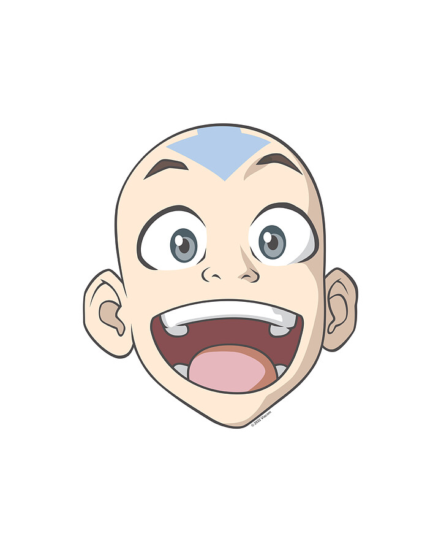

La pagina es solamente de prueba con problemas ortográficos, apropósito mi nombre esta como titulo pero es momentáneo por ahora hasta que consiga los permisos pertinente de cambiarme de nombre a Optimus Prime o simplemente Max Power. Esta parte es importante para el autor de esta pagina saber su próximo movimiento que mas escribir en esta pagina eso es lo curioso que ya no sabe y ahora escribe por escribir pero el cree que lo esta haciendo bien haa que irónico ahora escribe en tercera persona.